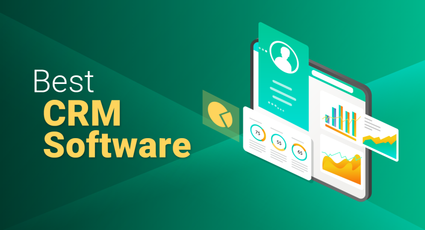

James McGill | Updated on January 14th 2024Privacy and Technology Consultant In a hurry? Here’s the top CRM Software for 2025:
CRM Software Tools & Systems For Business 2025
If you're a business owner, you know that keeping your data organized and accessible is key to your success. You need these data points to make informed decisions about your marketing, sales, and operations. That's where customer CRM tools and software comes in.
In the past, businesses would have to rely on paper records or basic Excel spreadsheets to track their customer data. This was often time-consuming and error-prone, leading to lost opportunities and frustrated customers.
Thankfully, CRM software tools and systems have come a long way in recent years, and there are now many great options available to help businesses keep track of their customer touchpoints.
This blog post will examine why CRM software tools and systems are so crucial for businesses in 2025.
An overview of the best CRM Software for 2025:
- 🥇 1. monday sales CRM — At the top of our list for the best CRM software this year is Monday.com's CRM, which offers flexible configuration options for businesses with unique sales procedures, centralized customer journey management for sales teams, and multilingual support.
- 🥈 2. Pipedrive — With Pipedrive, businesses can streamline their workflows, monitor and forecast sales trends, and improve their communication and relationships with customers.
- 🥉 3. Clickup — This platform is known for its budget-friendly options, intuitive user interface, and an extensive array of top-notch features.
- Frequently Asked Questions about CRM Software (FAQ).
What is a CRM? How can it help my business?
A CRM, or customer relationship management system, is a software tool businesses use to organize and track customer data. CRMs can help companies keep track of customer contact information, sales records, marketing data, and more.
Think of a CRM as a digital Rolodex for your business. It's a central dashboard where you can store all your customer data in one location and is accessible from anywhere with an internet connection.
There are many benefits of using a CRM, but here are some of the most important ones:
Helps you improve UXOne of the most important aspects of any business is providing a great customer experience. In order to do this, you need to have a good understanding of your customers' needs and preferences. A CRM can help you collect customer data to understand these factors better. This data can then improve your customer's experience with your business.
For example, let's say you own a clothing store. You can use your CRM to track which items of clothing your customers have purchased in the past, what sizes they usually buy, what colors they prefer, etc. With this information, you can then make sure that your customers always have a great experience by stocking the items they'll most likely want to buy.
Makes it easy to stay in touch with your customersAnother important benefit of using a CRM is that it makes it easy to stay in touch with your customers. With all your customer data stored in one central location, you can quickly and easily send emails, make phone calls, or even send direct mailings.
Staying in touch with your customers is essential for building long-lasting relationships. It can also help you increase sales and encourage customer loyalty. From a CRM, you can easily see which customers you need to reach out to and when.
Helps you automate your marketing and sales processesCRM tools can also help you automate your marketing and sales processes. For example, you can set up automated email campaigns to send out personalized messages to your customers based on their past purchase history.
You can also use CRM tools to automate your sales process, such as setting up automatic follow-ups for new leads or sending out price quotes. Your approach to marketing and sales will depend on your specific business goals, but automating these processes can save you a lot of time and effort in the long run.
Saves you time and moneySpeaking of saving resources, using a CRM can also help you save time and money. By automating your marketing and sales processes, you can free up your staff to focus on other, usually more vital tasks.
And because CRMs make it easy to stay in touch with your customers, you can avoid the cost of advertising to new customers all the time. Mind you, advertising can still be a valuable way to reach new customers, but it's not the only way to capitalize.
Customer SegmentationIn order to provide the best possible experience to your customers, you need to be able to segment them properly. Customer segmentation is the process of dividing your customer base into groups based on shared characteristics.
Segmenting your customers can help you better understand their needs and preferences. It can also help you create more targeted marketing campaigns. There are many different ways to segment your customers. Some standard methods include:
- Geographical location
- Age
- Gender
- Income level
- Interests
- Purchase history
With a CRM, you can easily track and segment your customers based on any of these characteristics. This information can then be used to create more targeted and effective marketing campaigns.

We like to call monday sales CRM a CRM on steroids. On top of offering core CRM features, such as sales pipeline and contact management, sales and workflow automation, interaction tracking, and email sync, Monday.com also offers extensive customization capabilities. With Monday.com CRM, teams can create custom fields and workflows, set up automated notifications and reminders, and generate reports to gain insights into their sales pipeline and customer data.
Because of its flexibility, Monday.com’s CRM enables teams to tailor the platform to match their sales processes, rather than having to change their processes to adapt to a CRM. In addition to connecting to a range of integrations and the native API, Monday.com goes beyond the predefined list of automation, allowing users to personalize nearly every aspect of the platform according to their requirements.
Monday.com, being primarily a project management tool, also provides unparalleled advantages that are not present in any other CRM tool. Firstly, the platform boasts an easily navigable interface that is user-friendly, even for those with limited technical proficiency. With its drag-and-drop functionality and intuitive design, users can conveniently set up and utilize the platform, reducing the onboarding period for new users. Additionally, the software features an open API and seamless integrations with popular applications like Outlook, Gmail, Excel, DocuSign, Salesforce, and Shopify to unify the sales pipeline. Its calendar and chat platform integrations also add to the seamless sales experience.
That pretty much covers everything we like about monday sales CRM, which is why we put it at the top of this year's list of the best CRM software. We can’t recommend it highly enough for businesses that need flexible CRM configuration options to match their unique sales procedures, sales teams that want to centralize customer journey management or businesses that need multilingual support.
Get monday sales CRM - The Leading CRM Software!
2. Pipedrive — Best Mobile CRM
Pipedrive is a cloud-based CRM system designed to help businesses manage their sales pipelines and streamline their sales processes. It was created with salespeople in mind, and it offers a range of features to help businesses stay organized and focused on closing deals. One of its key features is its sales pipeline management tool, which provides an easy-to-use visual interface that allows users to track deals and move them through different stages. Pipedrive also offers contact management capabilities, allowing users to centralize customer and prospect information, including contact details and communication history.
Another key feature of Pipedrive is its customizable sales processes, which allow businesses to tailor their workflows to match their unique needs. This includes the ability to create custom fields, add custom stages, and more. The CRM also integrates with popular email services like Gmail and Outlook, making it easy to send and receive emails directly from the platform. Additionally, Pipedrive provides a range of reporting and analytics tools to help businesses track their sales performance and make data-driven decisions. Pipedrive also has a mobile app for iOS and Android devices, making it easy to access the CRM on the go.
Overall, Pipedrive is a user-friendly and customizable CRM that can help businesses streamline their sales processes, manage their sales pipelines more efficiently, and make data-driven decisions.
Get Pipedrive - The Leading CRM Software!
How did we decide on our top CRM Software list for 2025?
Choosing a new software for your business is never easy, especially when it comes to CRM. It's not just the sheer number of options but other factors to consider: business goals, customization, deployment, cost, scalability, and more. Sounds like a lot of work? No worries, our team will help match your business to the right CRM to help your business find new customers, win their business, and keep them happy. When ranking the best CRM tools in the market, our team asked the following questions:
- What are the features and functionalities?
- Is it easy to use?
- Is it customizable?
- Is it scalable?
- Is it compliant with GDPR?
- How much is it going to cost?
- What third-party integrations does it offer?
- What support/customization is available?
CRM Software - Frequently Asked Questions (FAQ)
💻 Is CRM software the same as a customer database?
CRM software is more than just a customer database. The difference lies in the fact that a CRM provides you with features and functionality to help you manage your customer relationships. Only CRMs come with contact management, sales automation, and marketing automation. A customer database is simply a static collection of data.
❓ Do I need a CRM?
It depends on your business size, goals, and needs. If you're a startup with a limited customer base, you may not need a CRM immediately. But as you scale and grow, you may find a CRM essential for managing your customer relationships effectively.
In general, businesses that stand to benefit the most from using a CRM have a large or growing customer base, multiple sales and marketing channels, and complex sales processes.
💬 What's the best CRM for businesses?
There is no one-size-fits-all answer to this question. Hubspot's Sales CRM is an excellent overall choice for businesses focused on sales. They offer a free version that includes most of the features you'll need to get started.
Monday.com’s CRM platform is another good option for businesses of all sizes. They offer a free edition for up to two users, making it a great choice for small businesses. For companies focused on marketing, Freshsales CRM is well worth considering.
🔍 What features should I look for in a CRM?
If you're unsure what features you need, start by evaluating your business's specific needs. What processes do you need to automate? What kind of insights do you need to make better decisions? Do you have any customers that require special attention? Answering these questions will help you narrow down the list of features you should be looking for. Some essential features to look for in a CRM include:
- Contact management
- Lead management
- Sales automation
- Marketing automation
- Reporting and analytics
- And more!
Transparency and Trust: The aim of this website is to help you find the perfect software for your needs in an easy-to-view comparison list. You can read more about how we review and about our background in the About Us section of this website. Software.fish does not feature all of the software available in the market, we cherry-pick what we consider to be the leaders in each vertical. We try to keep this site updated and fresh, but cannot guarantee the accuracy of the information as well as the prices featured at all times. All prices quoted on this site are based on USD so there could be slight discrepancies due to currency fluctuations. Although the site is free to use, we do earn commissions from the software companies that we have partnered with. If you click on one of our links and then make a purchase, we will get paid by that company. This has an impact on the ranking, score, and order in which the software is presented in our list and elsewhere throughout the site. Software listings on this page DO NOT imply endorsement.